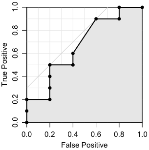

| 値 | 正しい分類 |
|---|---|
| 16 | T |
| 15 | T |
| 14 | F |
| 13 | T |
| 12 | T |
| 11 | T |
| 10 | F |
| 9 | T |
| 8 | T |
| 8 | T |
| 8 | T |
| 8 | F |
| 7 | F |
| 6 | T |
| 5 | F |

試験の点数から○○大学に合格（T）か不合格（F）かを予測したいときや，検査値から病気（T）か健康（F）かを判断したいときなどがあります。要するに，与えられた値から，真（TRUE）か偽（FALSE）かを判断したいわけです。
例として右の表のような場合を考えましょう。
与えられた値をどこで切っても，TとFは完全には分離できません。例えば11で切って，11以上を陽性（positive），11未満を陰性（negative）とした場合，10個のTのうち5個がpositiveに入りますので，true positive（真陽性）の割合は0.5です。また，5個のFのうち1個がpositiveに入りますので，false positive（偽陽性）の割合は0.2です。そこで，(0.2, 0.5) をプロットします。このように，区切る値（閾値，カットオフポイント）をいろいろ変えて，横軸にfalse positiveの割合，縦軸にtrue positiveの割合をとってプロットしたものが，ROC曲線です。
ROCはReceiver Operating Characteristicの略で，第2次大戦のときに米国のレーダーの研究から生まれた概念です。受信者操作特性あるいは受信者動作特性などと訳されることがあります（医療方面では受信が受診と書かれることもあります）。しっくりしない訳語なので，ここでは単にROCと書くことにします。
ROC曲線下の面積（Area under the curve，AUC）は分類器（分類のアルゴリズム）の性能の良さを表します。0から1までの値をとり，完全な分類が可能なときの面積は1で，ランダムな分類の場合は0.5になります。
AUCの値は，TとFからランダムに1個ずつ選んだとき，Tの値がFの値以上になる確率です（正確には，Tの値がFの値より大きくなる確率に，Tの値がFの値に等しくなる確率の半分を加えた値）。これは簡単に証明できます。
これはWilcoxon-Mann-Whitney検定とまったく同じことです。
RでROC曲線を描いたりAUCを求めたりできるパッケージはたくさんあります。例えばEpiパッケージ，epicalcパッケージ，ROCRパッケージ，DiagnosisMedパッケージ，BioConductorのROCパッケージなどです。また，群馬大の青木先生によるものも公開されています。青木先生のものは度数分布表にして計算するので，AUCの値は微妙に違うかもしれません。また，EpiパッケージによるAUCの値は時々ややおかしくなるようにも思います。
epicalc パッケージは epiDisplay パッケージに改編されたようです。Why was package 'epicalc' removed from CRAN? 参照。
以下は Tom Fawcett, An introduction to ROC analysis, Pattern Recognition Letters 27, 861-874 (2006) のアルゴリズムに基づいて作ったものです：
ROC = function(score, actual, add=FALSE,
col="black", col.area="", type="l", pch=16) {
o = order(score, decreasing=TRUE)
fp = tp = fp_prev = tp_prev = 0
nF = sum(actual == FALSE)
nT = sum(actual == TRUE)
score_prev = -Inf
ber_min = Inf
area = 0
rx = ry = numeric(length(o))
n = 0
for (i in seq_along(o)) {
j = o[i]
if (score[j] != score_prev) {
area = area + (fp - fp_prev) * (tp + tp_prev) / 2
n = n + 1
rx[n] = fp/nF
ry[n] = tp/nT
ber = (fp/nF + 1 - tp/nT)/2
if (ber < ber_min) {
ber_min = ber
th = score_prev
rx_best = fp/nF
ry_best = tp/nT
}
score_prev = score[j]
fp_prev = fp
tp_prev = tp
}
if (actual[j] == TRUE) {
tp = tp + 1
} else {
fp = fp + 1
}
}
area = area + (fp - fp_prev) * (tp + tp_prev) / 2
n = n + 1
rx[n] = fp/nF # = 1
ry[n] = tp/nT # = 1
if (!add) {
plot(NULL, xlim=c(0,1), ylim=c(0,1), asp=1,
xlab="False Positive", ylab="True Positive",
xaxs="i", yaxs="i")
abline(h=(1:9)/10, v=(1:9)/10, col=gray(0.9))
abline(0, 1, col=gray(0.4))
abline(h=0:1, v=0:1)
}
t = (rx_best + ry_best)/2
abline(ry_best-rx_best, 1, col=gray(0.8))
lines(c(rx_best, t), c(ry_best, t), col=gray(0.8))
if (col.area != "") {
polygon(c(rx[1:n],1), c(ry[1:n],0), col=col.area)
}
lines(rx[1:n], ry[1:n], type=type, lwd=2, col=col, pch=pch, xpd=TRUE)
cat("AUC =", area/(nF*nT), "th =", th, "\n")
cat("BER =", (rx_best + (1-ry_best))/2,
"OR =", (ry_best/(1-ry_best))/(rx_best/(1-rx_best)), "\n")
print(table(score >= th, actual, dnn=c("Predicted","Actual")))
invisible(list(rx=rx, ry=ry, AUC=area/(nF*nT), th=th))
}
このページの冒頭の例題は次のようにして実行できます。
s = c(16,15,14,13,12,11,10, 9, 8, 8, 8, 8, 7, 6, 5) t = c( T, T, F, T, T, T, F, T, T, T, T, F, F, T, F) ROC(s, t)
実際には上の図は次のようにして描きました：
par(mgp=c(2,0.8,0)) ROC(s, t, col.area=gray(0.9), type="o", pch=16)
描いた後でマウスでグラフの縦横比を調節して，見やすいようにしてください。
Rのコンソールに出力しているのは，AUCと，BER（Balanced Error Rate）が最小になる閾値（threshold），そのときのOR（オッズ比），そのときの分割表です。斜め45°の線と，BER最小の点からおろした垂線を，灰色で書き加えています。
もうちょっと詳しく説明すると，上のデータを11以上，11未満で分けるなら，Rで
table(s >= 11, t)
と打ち込めば，分割表
FALSE TRUE
FALSE 4 5
TRUE 1 5
が得られます。このような分割表を混同行列（confusion matrix）と呼ぶことがあります。
これを縦の合計で割ると，次のようになります。各欄の呼び名を書き加えてあります。
| FALSE | TRUE | |
|---|---|---|
| negative 陰性 (<11) | true negative rate 真陰性率 (specificity) (特異度) 0.8 | false negative rate 偽陰性率 0.5 |
| positive 陽性 (≧11) | false positive rate 偽陽性率 0.2 | true positive rate 真陽性率 (sensitivity) (感度) 0.5 |
この中で誤分類に相当する偽陽性率 0.2 と偽陰性率 0.5 の平均 (0.2+0.5)/2 = 0.35 をBER（Balanced Error Rate）といいます。BERの値はもちろん閾値によって変わりますが，この場合，BERが最小になる閾値は11で，ちょうど上の表になっています。
真陽性率÷偽陰性率，偽陽性率÷真陰性率を，オッズ（odds）といいます。
(真陽性率÷偽陰性率) ÷ (偽陽性率÷真陰性率) を，オッズ比（odds ratio，OR）といいます。
ROC曲線は，横軸に偽陽性率（つまり 1 - 特異度），縦軸に真陽性率（感度）をプロットした図です。
ついでに，なぜ縦の合計で割るかというと，縦のグループが母集団として意味があるからです。例えば患者とそうでない人とを比べる場合，病院は患者ばかりなので，対照として普通の人をリクルートするわけですが，患者と普通の人との比は必ずしも 1:1 になりません。この比に依存しない値を出すために，縦の合計で割ります。このようなものを true positive rate のように rate と呼ぶのはやや引っかかるので，true positive fraction などと呼ぶこともあります。
いくつかの分類器のアルゴリズム，ROC曲線，混同行列などについてのコンピュータ屋向きの解説が，オライリーから出ている本『詳解OpenCV』の第13章「機械学習」にあります。画像データから人間の顔かどうかを判断するようなOpenCVの仕事も，考え方は同じです。
[2014-09-22追記] このページは2009年に書いたものですが，ロジスティック回帰と変数選択でもROC曲線を使っています。
Last modified: